The following uses cases show how you can use the Options Chain to create strategies:
- Creating a butterfly strategy
- Creating a strip strategy
- Creating a custom straddle strategy
Example: creating a butterfly strategy
If you know the structure of a particular type of strategy, you can add the legs with the appropriate ratios by clicking them in the correct order. In this example, you can use the following procedure to create a butterfly spread:
-
In the Options Chain widget, click Fly to enter Spread Building mode.
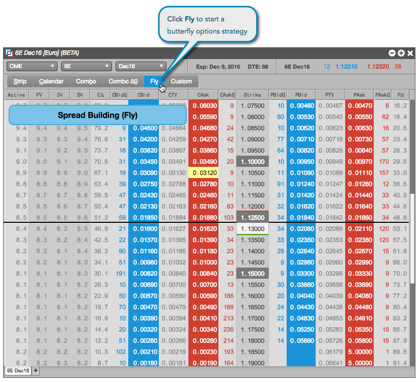
-
Click a Bid or Ask price to specify the first leg of the strategy.
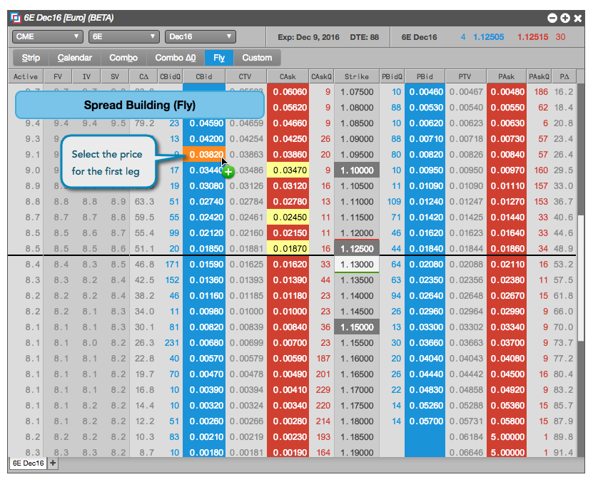
-
Click the price for either the second or third leg of the butterfly strategy.
As you hover over a price, the butterfly strategy automatically identifies the missing leg of the spread. In this case, you specify the second leg, so the third leg is automatically highlighted.
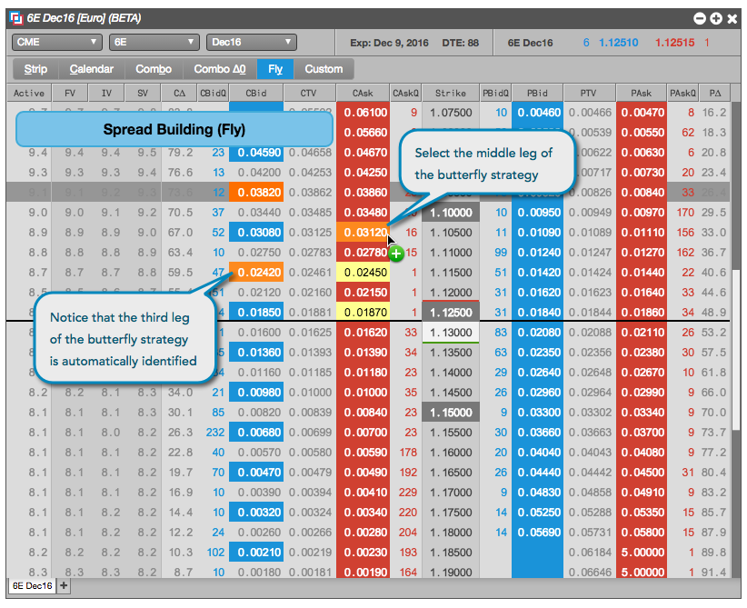
The Strategy Creation widget opens with the legs already added.
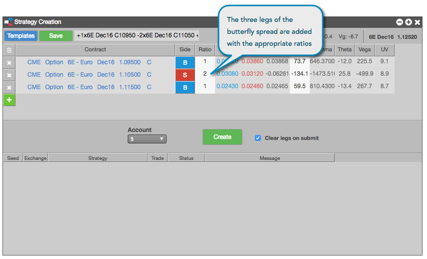
-
If you want to cover your position in the options with a position in the underlying futures contract, click + to add the futures instrument.
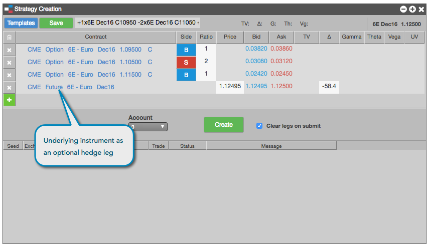
-
In the Strategy Creation widget, make any desired adjustments and click Create to submit your options strategy to the exchange.
Example: creating a strip strategy
In this example, you can use the following procedure to create a strip spread that sells one call options contract for each of the expiration months from Dec2016 to Jun2017:
-
In the Options Chain widget, click Strip to enter Spread Building mode.

-
Click a Bid or Ask price to specify the first leg of the strategy.
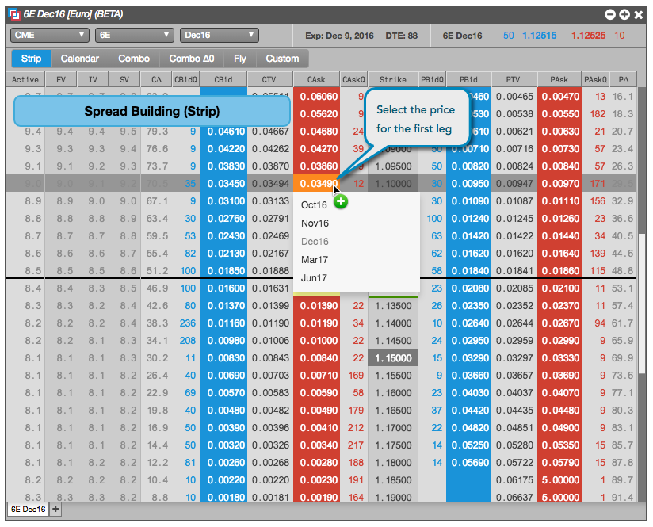
-
In the drop-down menu, select the end of the desired range of expiration months.
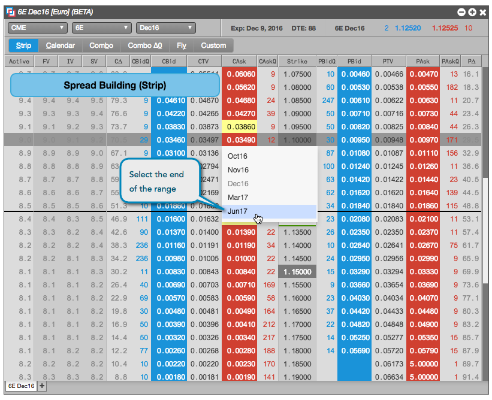
The Strategy Creation widget opens with the legs already added. The strategy is also seeded with the front month futures leg.
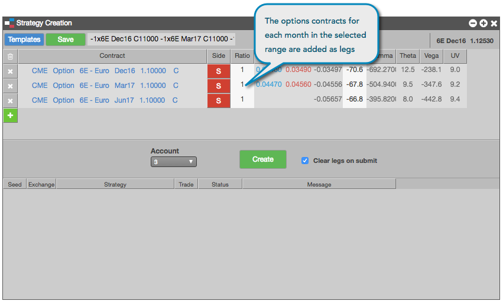
-
If you want to cover your position in the options with a position in the underlying futures contract, click + to add the futures instrument.
-
In the Strategy Creation widget, make any desired adjustments and click Create to submit your options strategy to the exchange.
Example: creating custom straddle strategy
By clicking on the Strike column of an option, you can easily create a straddle strategy. In this example, you can use the following procedure to create a Buy or Sell straddle strategy at the 98 strike price:
-
In the Options Chain widget, click Custom.
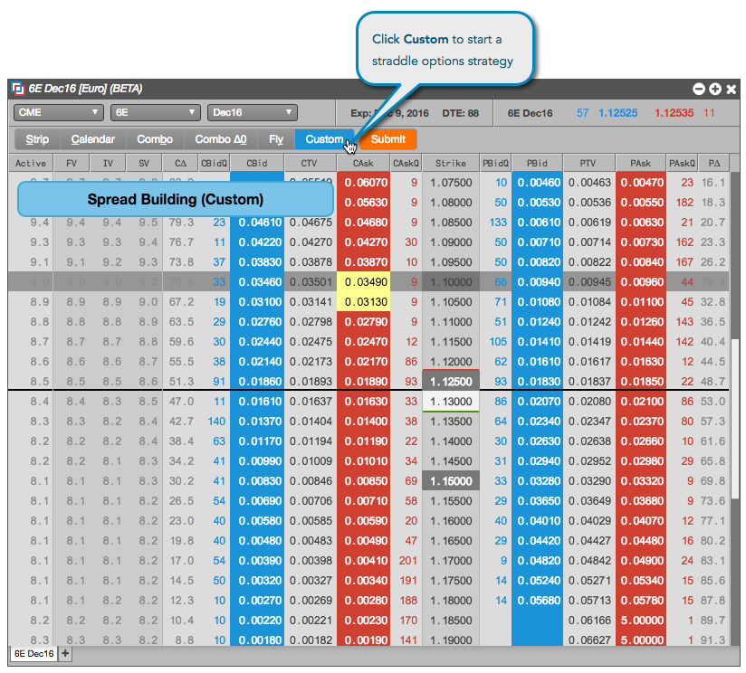
-
Left-click a price in the Strike column for a Buy straddle, or right-click a price to create a Sell straddle.
The widget automatically selects a Put and a Call option at that price level.
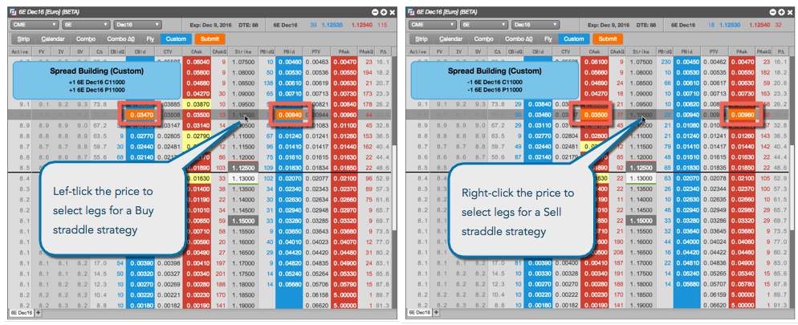
-
Click Submit to create the corresponding straddle strategy.
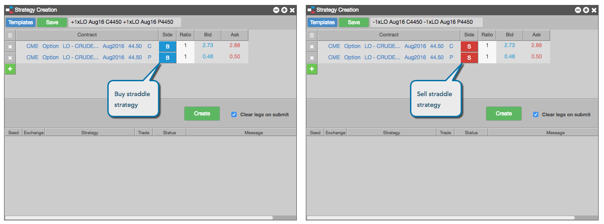
Note: If you want to cover your position in the options with a position in the underlying futures contract, click + to add the futures instrument. In this case, you added the underlying instrument to the Sell strategy.
-
In the Strategy Creation widget, make any desired adjustments and click Create to submit your options strategy to the exchange.